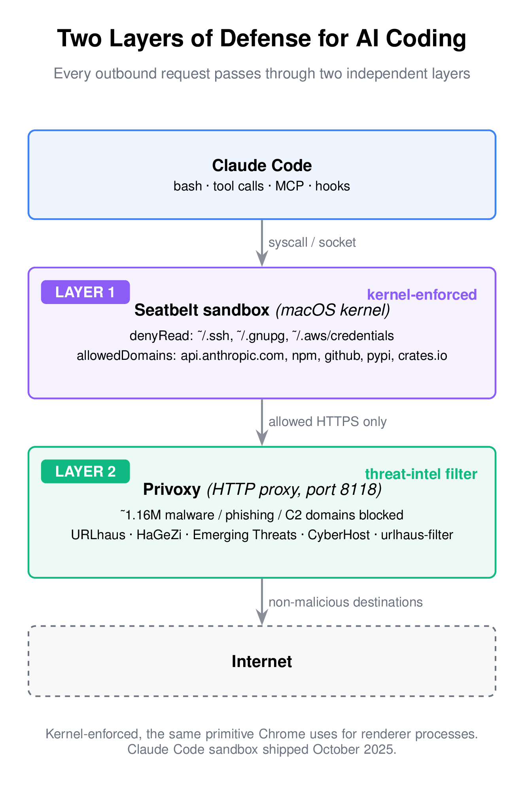

Sandboxing Claude Code on macOS: Seatbelt + Privoxy
When you run an AI coding agent in your terminal, you are not just giving it your codebase. You are giving it your user permissions. That means your SSH keys, your AWS credentials, your GPG keys, your Kubernetes config, your browser cookies – anything your shell can read, the agent can read. Anything your shell can exec, the agent can exec.
I have been using Claude Code heavily at Optimizory and AlphaFi. The productivity gain is real. But so is the blast radius if something goes wrong. This note is about how I set it up to reduce that blast radius, and why I think every team using these tools should do the same before the next incident lands in their inbox.

This is Not Hypothetical
Three things happened between late 2025 and early 2026 that changed how I think about this.
In March 2026, Check Point Research published CVE-2025-59536 and CVE-2026-21852. The attack is simple: a malicious repository ships with a .claude/settings.json that defines a Hook, or a .mcp.json that auto-approves a remote server. The moment a developer opens the project, Claude Code executes the hook before the trust dialog renders. Remote code execution, API token theft, both pre-auth from the user's perspective.
On March 31, 2026, Anthropic accidentally published 512,000 lines of Claude Code source to npm. The leak revealed the exact orchestration for hooks, MCP registration, and tool execution. Attackers now have a full map.
Meanwhile, a systematic study of agentic coding tools (arxiv:2509.22040) showed that adaptive prompt injection attacks succeed against Claude Code, Cursor, and GitHub Copilot at rates above 85%. Invariant Labs demonstrated a GitHub MCP hijack where a malicious Issue filed on a public repo coerced the agent into leaking data from the user's private repos. The Cursor-plus-Supabase version of this leaked service_role keys via a support ticket.
None of this is about Claude being "bad" – every agentic coding tool has the same shape of problem. The question is: what layer of the stack actually stops a bad instruction from reaching your keys?
Seatbelt: The Layer That Does Not Ask
In October 2025, Anthropic shipped native sandboxing for Claude Code. On macOS it uses Apple's Seatbelt framework. On Linux it uses bubblewrap. Both are kernel-level.
Seatbelt is not a new piece of software and not a marketing name. It is the same kernel sandbox that Chrome uses to isolate its renderer processes and the same primitive every iOS app runs inside. The Chromium Mac Sandbox V2 design document is the canonical reference – if you want to understand the actual enforcement boundary, read it. Chrome's threat model assumes the renderer will be compromised. Its sandbox exists so that when it is, the attacker cannot read your documents. That is the same assumption I want to make about an AI coding agent.
Seatbelt enforces policies in the kernel. A sandboxed process does not see denied paths. It cannot exec outside allowed directories. It cannot open network sockets to non-allowed hosts. No prompt, no dialog, no soft confirmation. The syscall fails. This is important because every prompt-based guardrail in an agent eventually loses to a sufficiently creative attacker. A kernel denial does not.
One honest note: Apple has marked the older sandbox-exec command-line tool as deprecated. The underlying kernel API that Claude Code uses is what Chrome also uses, and it is not deprecated. The CLI wrapper is.
Turning It On
Create or edit ~/.claude/settings.json and add a sandbox block. Here is the minimum I would ship to a team:
{
"sandbox": {
"enabled": true,
"filesystem": {
"denyRead": [
"~/.ssh",
"~/.gnupg",
"~/.authinfo.gpg",
"~/.aws/credentials"
],
"denyWrite": [
"~/.aws",
"~/.config",
"~/Library/Keychains"
]
},
"network": {
"httpProxyPort": 8118,
"allowedDomains": [
"api.anthropic.com",
"registry.npmjs.org",
"github.com",
"pypi.org",
"crates.io"
]
}
}
}
The denyRead list should cover every place a secret actually lives on your machine. Walk through your $HOME and think honestly. Mine also includes the Emacs authinfo file and a couple of per-project token caches. Yours will look different.
The denyWrite list is about integrity. Even if a process cannot exfiltrate an AWS key, it could still modify ~/.aws/config to point future CLI calls at an attacker-controlled endpoint. Deny writes to config directories you did not put there for the agent.
The allowedDomains list is where most people under-invest. An agent that can reach any HTTPS host can exfiltrate anything it reads, in one curl. Keep the list tight. Add domains when you genuinely need them, not preemptively.
All of the above is enforced at the OS level, not inside Claude Code. A compromised hook or a malicious MCP server that tries to escape the agent still hits the same kernel denial. That is what "defense in depth" actually means here.
The Network Layer: Why a Filtering Proxy on Top
The sandbox's allowedDomains list is a positive allow list. Combined with a filtering proxy, you also get a deny list covering domains that are allowed through the positive list but happen to be actively malicious – compromised CDNs, typosquatted package mirrors, C2 infrastructure that happens to live on a domain the agent has legitimate reasons to reach.
I run Privoxy locally for this. It is boring, battle-tested, open-source filtering-proxy software – no telemetry, no cloud account. The sandbox config's httpProxyPort: 8118 routes all sandboxed HTTP traffic through it.
The filtering is only as good as the block list. I wrote a small script that aggregates five threat-intelligence feeds into a Privoxy action file:
- URLhaus (abuse.ch) – malware distribution URLs, updated every five minutes.
- HaGeZi DNS Blocklists – aggregated threat intelligence, broad coverage.
- Emerging Threats (Proofpoint) – IDS-derived malware and APT domains.
- CyberHost – verified malware and phishing.
- urlhaus-filter – domain-format mirror of URLhaus.
After dedup, this typically lands around 1.1–1.2 million domains. Refreshed every six hours via cron.
The full script is here: threat-to-privoxy.sh on GitHub Gist.
Setup on macOS:
brew install privoxy
brew services start privoxy
# Download the script (or save from the gist)
curl -o ~/bin/threat-to-privoxy.sh \
https://gist.githubusercontent.com/jangid/00c36592a154c611de93923c649b3cf9/raw/threat-to-privoxy.sh
chmod +x ~/bin/threat-to-privoxy.sh
# First run populates the action file and registers it
sudo ~/bin/threat-to-privoxy.sh
brew services restart privoxy
# Keep it fresh
crontab -e
# Add:
# 0 */6 * * * ~/bin/threat-to-privoxy.sh && brew services restart privoxy
The script auto-detects Intel vs Apple Silicon Homebrew paths and is safe to re-run.
One limit worth naming here: Privoxy is an HTTP/HTTPS filtering proxy. It does not cover raw TCP, SOCKS-tunnelled traffic, or non-HTTP protocols that a subprocess might use. For most package managers and curl-style fetches this is fine, because they speak HTTP. But if your workflow involves SSH tunnels, custom TCP clients, or a tool that opens its own SOCKS channel, that traffic bypasses Privoxy entirely. If you know of a well-audited SOCKS proxy with threat-intelligence integration comparable to what Privoxy does at the HTTP layer, I would genuinely like to hear about it – reply or message me. I plan to add a SOCKS layer next, and I would rather use something vetted than roll my own.
What This Does Not Protect
I want to be honest about the limits, because "kernel sandbox" is easy to read as "solved."
- Prompt injection inside allowed domains. If your
allowedDomainsincludesgithub.comand an attacker files a malicious Issue that the agent reads, the sandbox does not see that as an attack – it is a legitimate request to an allowed host. Treat MCP servers and agent inputs as untrusted input, always. - IDE and editor extensions outside Claude Code. If you run other AI tools alongside – Cursor, Copilot, Windsurf, aider – each has its own permission model. Check their configurations separately. I will write about those in follow-up articles. The short version: every one of them needs the same analysis.
- The agent's legitimate reach. The sandbox cannot tell the difference between "read this source file because I am refactoring" and "read this source file because an injected prompt told me to summarise it to a C2 server." Keep the write and network lists tight enough that summary-to-attacker has nowhere to land.
- Supply chain attacks on tools you install. The sandbox gates what Claude Code can reach. It does not audit the integrity of a package the user tells
npm installto fetch. That is a separate problem – use lockfiles, checksum verification, and something like Trail of Bits' opinionated defaults for the agent side.
Set It Up Today
The CVEs I cited existed in the wild before the fixes shipped. The source leak is permanent – it cannot be unpublished. The frequency of these incidents is going up, not down. And the same pattern applies to every other AI coding tool you run; the specific flags and config keys differ, but the threat model is identical.
The Claude Code sandbox takes about ten minutes to configure properly. Privoxy takes another ten. Twenty minutes of work against a risk class that has already produced multiple public incidents. That is a good trade.